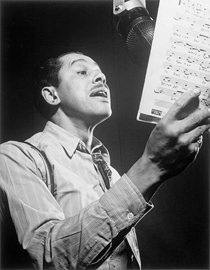
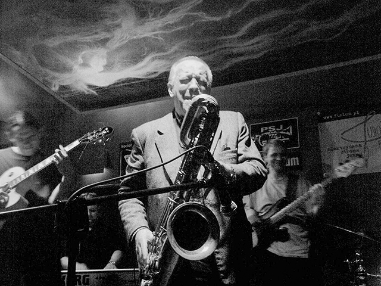
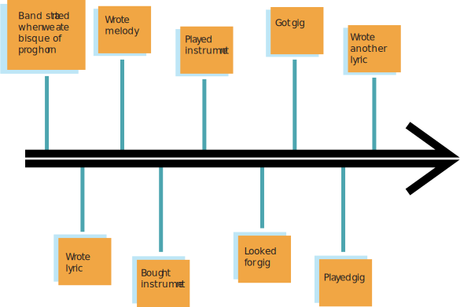

The Band's History
The band includes Duke Armstrong, the lead sax player, who founded the band in 1997. Duke started learning Sax at age 7, and played for his middle and high school as well. Along the way, he met Louis Ellington, the band’s trumpet player. The two met at high school, and got scholarships to the same college, and ended up attending Berklee College of Music as brass majors to their respective instruments. The two met Dean Sinatra, and Frank Martin at the college, who played Trombone, and Tuba respectively. The four graduated in the class of 1996, and Duke suggested that they become a quartet, and the rest is history.
Influences



TIMELINE
